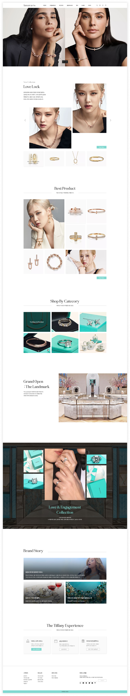
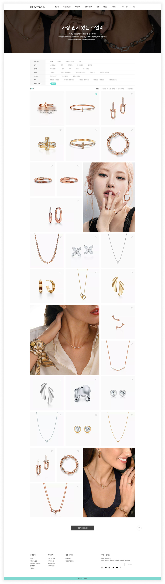
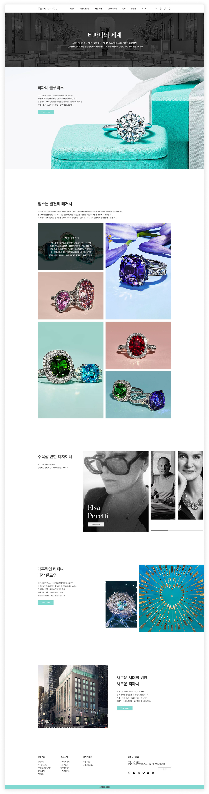
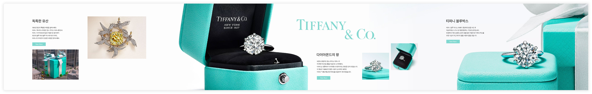

Personal project · Independent redesign
Tiffany & Co.
A luxury jewellery website redesign exploring brand storytelling and product discovery.
This is an independent portfolio concept, not commissioned by Tiffany & Co.
Design direction
A consistent visual language
A white foundation, blue-green accents, editorial photography, and generous spacing express heritage, luxury, and craftsmanship. The design pairs Pretendard for Korean interface copy with Belgiano Serif for English display typography.
01 · Homepage
A collection-led introduction
The homepage combines editorial photography with new collections, featured products, and category entry points.

02 · Product listing
Focused product discovery
Filters and a consistent product grid support browsing while keeping jewellery imagery at the centre of the experience.

03 · Product detail
From product imagery to further discovery
A compact gallery presents the product, while related items and service content support further exploration.

04 · Brand story
An editorial view of the brand
The brand information page brings heritage and craftsmanship into a clear visual narrative.

05 · Horizontal brand story
An alternative storytelling layout
A horizontal composition explores a different rhythm for presenting the brand story. This image documents the proposed layout.

Reflection
A concept for further evaluation
This project presents redesign screens and a visual system. Business and usability outcomes were not measured. Further evaluation would focus on product discovery, filter clarity, and brand-story navigation.